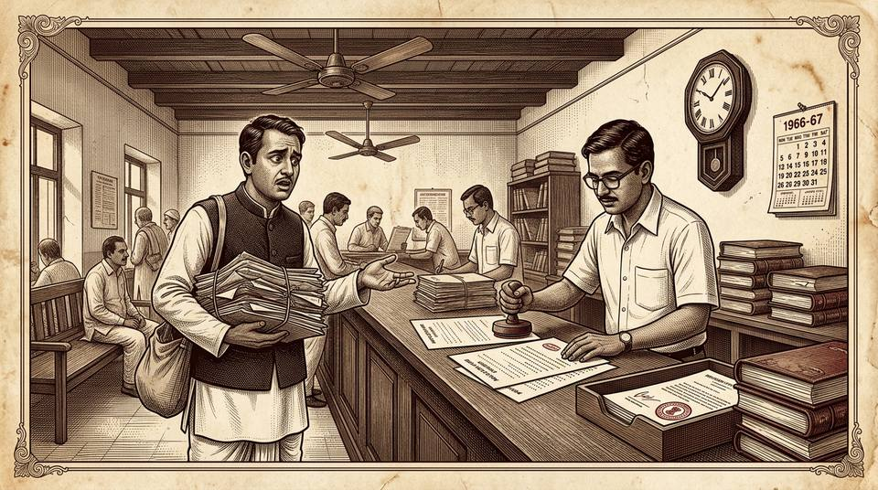

CASE 31 — DU CASE MATERIAL · SUB-TOPIC (a): SECTION 12
The Commissioner of Sales Tax, U.P. v. M/s. Madan Lal Das & Sons, Bareilly
s.12(2) exclusions.29(2) special lawsrevision applicationlost copyJ.N. Surty (PC)U.P. Sales Tax Act

Facts in Detail
- Assessment year 1960-61. The dealer-respondent (Madan Lal Das & Sons, Bareilly) appealed against a Sales Tax Officer's order; the Additional Commissioner (Judicial) Sales Tax disposed of the appeal.
- 22-8-1965: the copy of the appellate order was served on the dealer under the Act. He then lost that copy.
- 15-6-1966: he applied for another copy of the order. The copy was ready 17-8-1967 and delivered 18-8-1967.
- 9-9-1967: he filed a revision under s.10 of the U.P. Sales Tax Act, 1940 before the Judge (Revision), Sales Tax.
- The limitation rule: s.10(3-B) prescribed one year from service of the order, with power in the revising authority to entertain within a further six months on proof of sufficient cause.
- The objection: the revenue contended the revision was out of time; the dealer claimed exclusion under s.12(2), Limitation Act, 1963 of the time spent obtaining the fresh copy.
- The Judge (Revision) and the Allahabad High Court (on a referred question under s.11(3) of the Act) accepted the dealer's contention; the Commissioner appealed to the Supreme Court.
Issues
- Does s.12(2) of the Limitation Act, 1963 apply to computing limitation for a revision application under a special law (the U.P. Sales Tax Act) — or does the special law form a "complete code" excluding it?
- Is the time for obtaining a copy excluded where the copy was not required to be filed along with the revision application?
- Where a copy had been served and lost, is the time spent obtaining a fresh copy nonetheless "requisite"?
Arguments for the Commissioner (appellant)
- The U.P. Sales Tax Act is a complete code prescribing its own limitation for revisions; the Limitation Act's s.12(2) has no room.
- The rules did not require a copy of the order to be filed with the revision petition — so no time for obtaining it could be "requisite".
- A copy had already been served on the dealer under the Act; the loss was his own — the fresh copy was a luxury, not a requisite.
Arguments for Madan Lal Das (respondent)
- s.29(2), Limitation Act: ss.4–24 apply to special-law periods "in so far as... not expressly excluded" — nothing in the Sales Tax Act expressly excluded s.12(2).
- Without the copy, the dealer and his adviser could not decide whether to revise and on what grounds — the time was genuinely requisite.
- The 1963 Act's s.12(2) covers revision expressly (the 1908 Act's did not) — the legislative design supports exclusion.
The Decision — H.R. Khanna, J.
- Special law, but s.12(2) applies: the U.P. Sales Tax Act is a special law; by s.29(2) the provisions of s.12(2) apply to its limitation "in so far as and to the extent to which they are not expressly excluded" — and there was no express exclusion. Hence "the provisions of sub-section (2) of Section 12 can be invoked for computing the period of limitation prescribed for filing a revision petition under Section 10".
- Copy need not be filed — still excluded: nothing in s.12(2) limits the exclusion to cases where the copy must accompany the application; it would be "impermissible to read in" such a proviso the legislature never enacted. "It is also plain that without procuring copy of the order... the respondent and his legal adviser would not have been in a position to decide as to whether [the] revision petition should be filed... and if so, what grounds should be taken."
- The authority — J.N. Surty v. T.S. Chetiyar (AIR 1928 PC 103): the Privy Council held s.12(2) (of the 1908 Act) applies even where the rules did not require the copy to be filed with the memorandum of appeal: the section "makes no reference to the Code of Civil Procedure or to any other Act. It does not say why the time is to be excluded, but simply enacts it as a positive direction." The decree "may be complicated... the practitioner may well want to see its form before attacking it"; the Legislature "may not wish him to hurry to make a decision till he has well considered it."
- The precedent-line: FB Lahore (Punjab Co-operative Bank v. Official Liquidators, AIR 1941 Lah 257 — Companies Act appeals); FB Patna (Mt. Lalitkumari v. Mahaprasad N. Singh, AIR 1947 Pat 329 — Letters Patent appeals); SC (Additional Collector of Customs v. Best & Co., AIR 1966 SC 1713).
- On the lost copy — Maharaj Narain applied a fortiori: there, three copies obtained on different dates, and the SC excluded the time for the copy filed with the memorandum (which took the maximum time), refusing a minimum-time enquiry. "If that be the position of law in a case where there was no allegation of the loss of any copy, a fortiori... where the copy served upon a party is lost and there is no alternative except to apply for a fresh copy... the time spent in obtaining that copy would necessarily have to be excluded under Section 12(2)."
- Result: the High Court correctly answered the referred question for the dealer — time for the fresh copy excluded; revision within time.
Timeline of the lost copy
A.Y. 1960-61
Sales tax assessment; dealer's appeal disposed of by the Additional Commissioner (Judicial).
22-8-1965
Copy served on the dealer under the Act — limitation (1 year + 6 months) begins from service (s.10(3-B)).
1965–66
Dealer loses the served copy.
15-6-1966
Application for a fresh copy — the protected period starts.
17/18-8-1967
Copy ready and delivered — excluded time ends.
9-9-1967
Revision filed — within time once the copy-period is excluded (s.12(2) via s.29(2)).
1977
SC affirms — special laws take the Limitation Act's computation machinery unless they expressly exclude it.
PRINCIPLE EVOLVED
- s.29(2) gateway: a special law's limitation period is computed with the full ss.4–24 machinery (including s.12(2)) unless expressly excluded — "complete code" arguments fail in the absence of express exclusion.
- Exclusion does not depend on filing requirements: the time for obtaining a copy is excluded even if the copy need not accompany the application — s.12(2) is "a positive direction" (J.N. Surty).
- Lost copies: where the served copy is lost, the time for obtaining a fresh copy is necessarily requisite and excluded (a fortiori from Maharaj Narain).
- The 1963 Act extends s.12(2) to revisions expressly — a deliberate widening of the 1908 position.